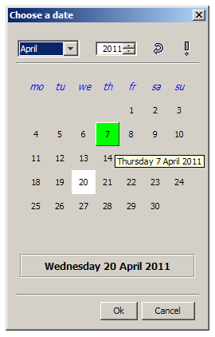

- java.lang.Object
-
- java.awt.Component
-
- java.awt.Container
-
- java.awt.Window
-
- java.awt.Dialog
-
- javax.swing.JDialog
-
- org.sm.smtools.swing.dialogs.JDefaultDialog
-
- org.sm.smtools.swing.dialogs.JDateChooser
-
- All Implemented Interfaces:
- java.awt.event.ActionListener, java.awt.event.WindowListener, java.awt.image.ImageObserver, java.awt.MenuContainer, java.io.Serializable, java.util.EventListener, javax.accessibility.Accessible, javax.swing.event.ChangeListener, javax.swing.RootPaneContainer, javax.swing.WindowConstants
public final class JDateChooser extends JDefaultDialog implements javax.swing.event.ChangeListener
TheJDateChooserclass provides a dialog box for choosing a date.Note that a valid
I18NL10Ndatabase must be available!The dialog box is modal, non-resizable and contains "Ok" and "Cancel" buttons to close it. Here's an example of a date chooser (Microsoft Windows L&F):

As can be seen, the following features are available:
- The currently selected date is shown in white.
- Whenever the mouse pointer moves over the day numbers of the calendar, they become clickable buttons. The button currently underneath the mouse pointer is shown in green (a tooltip containing the full date is shown after a while).
- At the top of the dialog box, a navigational area is present for choosing a month and a year.
- The optional undo button resets the calendar to its initial date (and selects it).
- The exclamation button
 moves the calendar to the current date (and selects it).
moves the calendar to the current date (and selects it).
When the user closes the date chooser's dialog box, its state should be queried as follows:
if (!myDateChooser.isCancelled()) {
DateStamp dateStamp = myDateChooser.getSelectedDate();
// rest of code
}
Note that the system resources must be initialised (see
JARResources.fSystemResources).Note that this class cannot be subclassed!
- Version:
- 30/06/2018
- Author:
- Sven Maerivoet
- See Also:
- Serialized Form
-
-
Nested Class Summary
Nested Classes Modifier and Type Class and Description static classJDateChooser.EUseDefaultDateUseful constants to allow the use of the undo button .-
Nested classes/interfaces inherited from class org.sm.smtools.swing.dialogs.JDefaultDialog
JDefaultDialog.EModality, JDefaultDialog.ESize, JDefaultDialog.EType
-
Nested classes/interfaces inherited from class javax.swing.JDialog
javax.swing.JDialog.AccessibleJDialog
-
Nested classes/interfaces inherited from class java.awt.Dialog
java.awt.Dialog.AccessibleAWTDialog, java.awt.Dialog.ModalExclusionType, java.awt.Dialog.ModalityType
-
Nested classes/interfaces inherited from class java.awt.Window
java.awt.Window.AccessibleAWTWindow, java.awt.Window.Type
-
-
Field Summary
-
Fields inherited from class javax.swing.JDialog
accessibleContext, rootPane, rootPaneCheckingEnabled
-
Fields inherited from class java.awt.Component
BOTTOM_ALIGNMENT, CENTER_ALIGNMENT, LEFT_ALIGNMENT, RIGHT_ALIGNMENT, TOP_ALIGNMENT
-
-
Constructor Summary
Constructors Constructor and Description JDateChooser(javax.swing.JFrame owner, java.lang.String title, JDefaultDialog.EType dialogType, DateStamp defaultDateStamp, JDateChooser.EUseDefaultDate useDefaultDate)Constructs aJDateChooserobject.
-
Method Summary
All Methods Instance Methods Concrete Methods Modifier and Type Method and Description voidactionPerformed(java.awt.event.ActionEvent e)The dialog box's action listener.DateStampgetSelectedDate()Returns the currently selected date.protected voidinitialiseClass(java.lang.Object[] parameters)Allows custom initialisation of a subclass's member fields.voidsetDefaultDate(DateStamp defaultDateStamp)Sets the default date.protected voidsetupMainPanel(javax.swing.JPanel mainPanel)Sets up the custom content in the dialog box.protected java.lang.StringsetupWindowTitle()Sets up the window title of the dialog box.voidstateChanged(javax.swing.event.ChangeEvent e)-
Methods inherited from class org.sm.smtools.swing.dialogs.JDefaultDialog
activate, cancelSelected, disableAutoPositioning, initialiseDuringActivation, isCancelled, isShown, okSelected, setupInitialDialogSize, updateGUI, windowActivated, windowClosed, windowClosing, windowDeactivated, windowDeiconified, windowIconified, windowOpened
-
Methods inherited from class javax.swing.JDialog
addImpl, createRootPane, dialogInit, getAccessibleContext, getContentPane, getDefaultCloseOperation, getGlassPane, getGraphics, getJMenuBar, getLayeredPane, getRootPane, getTransferHandler, isDefaultLookAndFeelDecorated, isRootPaneCheckingEnabled, paramString, processWindowEvent, remove, repaint, setContentPane, setDefaultCloseOperation, setDefaultLookAndFeelDecorated, setGlassPane, setJMenuBar, setLayeredPane, setLayout, setRootPane, setRootPaneCheckingEnabled, setTransferHandler, update
-
Methods inherited from class java.awt.Dialog
addNotify, getModalityType, getTitle, hide, isModal, isResizable, isUndecorated, setBackground, setModal, setModalityType, setOpacity, setResizable, setShape, setTitle, setUndecorated, setVisible, show, toBack
-
Methods inherited from class java.awt.Window
addPropertyChangeListener, addPropertyChangeListener, addWindowFocusListener, addWindowListener, addWindowStateListener, applyResourceBundle, applyResourceBundle, createBufferStrategy, createBufferStrategy, dispose, getBackground, getBufferStrategy, getFocusableWindowState, getFocusCycleRootAncestor, getFocusOwner, getFocusTraversalKeys, getIconImages, getInputContext, getListeners, getLocale, getModalExclusionType, getMostRecentFocusOwner, getOpacity, getOwnedWindows, getOwner, getOwnerlessWindows, getShape, getToolkit, getType, getWarningString, getWindowFocusListeners, getWindowListeners, getWindows, getWindowStateListeners, isActive, isAlwaysOnTop, isAlwaysOnTopSupported, isAutoRequestFocus, isFocusableWindow, isFocusCycleRoot, isFocused, isLocationByPlatform, isOpaque, isShowing, isValidateRoot, pack, paint, postEvent, processEvent, processWindowFocusEvent, processWindowStateEvent, removeNotify, removeWindowFocusListener, removeWindowListener, removeWindowStateListener, reshape, setAlwaysOnTop, setAutoRequestFocus, setBounds, setBounds, setCursor, setFocusableWindowState, setFocusCycleRoot, setIconImage, setIconImages, setLocation, setLocation, setLocationByPlatform, setLocationRelativeTo, setMinimumSize, setModalExclusionType, setSize, setSize, setType, toFront
-
Methods inherited from class java.awt.Container
add, add, add, add, add, addContainerListener, applyComponentOrientation, areFocusTraversalKeysSet, countComponents, deliverEvent, doLayout, findComponentAt, findComponentAt, getAlignmentX, getAlignmentY, getComponent, getComponentAt, getComponentAt, getComponentCount, getComponents, getComponentZOrder, getContainerListeners, getFocusTraversalPolicy, getInsets, getLayout, getMaximumSize, getMinimumSize, getMousePosition, getPreferredSize, insets, invalidate, isAncestorOf, isFocusCycleRoot, isFocusTraversalPolicyProvider, isFocusTraversalPolicySet, layout, list, list, locate, minimumSize, paintComponents, preferredSize, print, printComponents, processContainerEvent, remove, removeAll, removeContainerListener, setComponentZOrder, setFocusTraversalKeys, setFocusTraversalPolicy, setFocusTraversalPolicyProvider, setFont, transferFocusDownCycle, validate, validateTree
-
Methods inherited from class java.awt.Component
action, add, addComponentListener, addFocusListener, addHierarchyBoundsListener, addHierarchyListener, addInputMethodListener, addKeyListener, addMouseListener, addMouseMotionListener, addMouseWheelListener, bounds, checkImage, checkImage, coalesceEvents, contains, contains, createImage, createImage, createVolatileImage, createVolatileImage, disable, disableEvents, dispatchEvent, enable, enable, enableEvents, enableInputMethods, firePropertyChange, firePropertyChange, firePropertyChange, firePropertyChange, firePropertyChange, firePropertyChange, firePropertyChange, firePropertyChange, firePropertyChange, getBaseline, getBaselineResizeBehavior, getBounds, getBounds, getColorModel, getComponentListeners, getComponentOrientation, getCursor, getDropTarget, getFocusListeners, getFocusTraversalKeysEnabled, getFont, getFontMetrics, getForeground, getGraphicsConfiguration, getHeight, getHierarchyBoundsListeners, getHierarchyListeners, getIgnoreRepaint, getInputMethodListeners, getInputMethodRequests, getKeyListeners, getLocation, getLocation, getLocationOnScreen, getMouseListeners, getMouseMotionListeners, getMousePosition, getMouseWheelListeners, getName, getParent, getPeer, getPropertyChangeListeners, getPropertyChangeListeners, getSize, getSize, getTreeLock, getWidth, getX, getY, gotFocus, handleEvent, hasFocus, imageUpdate, inside, isBackgroundSet, isCursorSet, isDisplayable, isDoubleBuffered, isEnabled, isFocusable, isFocusOwner, isFocusTraversable, isFontSet, isForegroundSet, isLightweight, isMaximumSizeSet, isMinimumSizeSet, isPreferredSizeSet, isValid, isVisible, keyDown, keyUp, list, list, list, location, lostFocus, mouseDown, mouseDrag, mouseEnter, mouseExit, mouseMove, mouseUp, move, nextFocus, paintAll, prepareImage, prepareImage, printAll, processComponentEvent, processFocusEvent, processHierarchyBoundsEvent, processHierarchyEvent, processInputMethodEvent, processKeyEvent, processMouseEvent, processMouseMotionEvent, processMouseWheelEvent, remove, removeComponentListener, removeFocusListener, removeHierarchyBoundsListener, removeHierarchyListener, removeInputMethodListener, removeKeyListener, removeMouseListener, removeMouseMotionListener, removeMouseWheelListener, removePropertyChangeListener, removePropertyChangeListener, repaint, repaint, repaint, requestFocus, requestFocus, requestFocusInWindow, requestFocusInWindow, resize, resize, revalidate, setComponentOrientation, setDropTarget, setEnabled, setFocusable, setFocusTraversalKeysEnabled, setForeground, setIgnoreRepaint, setLocale, setMaximumSize, setName, setPreferredSize, show, size, toString, transferFocus, transferFocusBackward, transferFocusUpCycle
-
-
-
-
Constructor Detail
-
JDateChooser
public JDateChooser(javax.swing.JFrame owner, java.lang.String title, JDefaultDialog.EType dialogType, DateStamp defaultDateStamp, JDateChooser.EUseDefaultDate useDefaultDate)Constructs aJDateChooserobject.- Parameters:
owner- the frame in which this dialog is to be displayedtitle- the dialog's window titledialogType- the type of dialogdefaultDateStamp- the defaultDateStampused when the calendar is shownuseDefaultDate- anEUseDefaultDateswitch for enabling/disabling the use of the default date
-
-
Method Detail
-
actionPerformed
public void actionPerformed(java.awt.event.ActionEvent e)
Description copied from class:JDefaultDialogThe dialog box's action listener.Note that when overriding this method in a subclass, its parent should explicitly be called in order to guarantee the correct processing of the user's input ("Ok" and "Ok/Cancel" type of dialog boxes):
super.actionPerformed(e);
// rest of method's code- Specified by:
actionPerformedin interfacejava.awt.event.ActionListener- Overrides:
actionPerformedin classJDefaultDialog- Parameters:
e- theActionEventthat is received
-
getSelectedDate
public DateStamp getSelectedDate()
Returns the currently selected date.- Returns:
- the currently selected date
-
initialiseClass
protected void initialiseClass(java.lang.Object[] parameters)
Description copied from class:JDefaultDialogAllows custom initialisation of a subclass's member fields.Note that the caller should specify
nullif no parameters are specified.- Overrides:
initialiseClassin classJDefaultDialog- Parameters:
parameters- an array ofObjects
-
setDefaultDate
public void setDefaultDate(DateStamp defaultDateStamp)
Sets the default date.The default date is initially shown in the calendar, it is furthermore accessible via the optional undo button .
- Parameters:
defaultDateStamp- the default date for the date chooser
-
setupMainPanel
protected void setupMainPanel(javax.swing.JPanel mainPanel)
Description copied from class:JDefaultDialogSets up the custom content in the dialog box.A subclass should typically create labels, inputfields, ... in the dialog boxes main panel, by overriding this method.
Note that the
mainPanelobject is already constructed!- Overrides:
setupMainPanelin classJDefaultDialog- Parameters:
mainPanel- the area of the dialog box that is reserved for custom content
-
setupWindowTitle
protected final java.lang.String setupWindowTitle()
Description copied from class:JDefaultDialogSets up the window title of the dialog box.In order to obtain a custom dialog title, the caller should override this method (it returns
nullin the baseclass).- Overrides:
setupWindowTitlein classJDefaultDialog- Returns:
- the window title of the dialog box
-
stateChanged
public void stateChanged(javax.swing.event.ChangeEvent e)
- Specified by:
stateChangedin interfacejavax.swing.event.ChangeListener
-
-